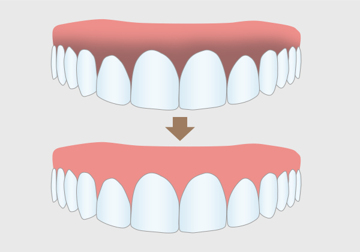

ZERO DENTAL CLINIC
잇몸미백이란 잇몸이 건강한 선분홍색이 아닌 거무스름하거나 검붉은색의 잇몸 등
멜라닌 색소의 침착으로 잇몸이 변색되었을 때 레이저나 치과용 장비를 이용해 잇몸을 박피하는 식을 말합니다.
잇몸미백을 통해 건강한 선분홍 잇몸과 아름다운 미소를 되찾아 드립니다.
치료시간
1시간
마취방법
국소마취
약처방
필요에 따라 처방
내원 간격
1주일 간격
회복기간
2주
치료 후 관리
정기검진

시술 후 3~4일은 음주와 흡연은 삼가시는 것이 좋습니다.
레이저 잇몸 미백 후 다시 색소가 침착되어 검게 보일 수 있습니다.
개개인에 따라 차이는 있으나 보통 3년 주기로 받으며, 특히나 흡연 시 수개월 내 다시 착색 될 수 있습니다.
시술 후 구강 관리를 철저하게 하고 잇몸에 자극이 가해지지 않도록 주의해야 합니다.